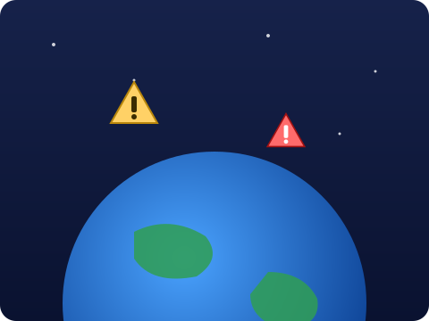
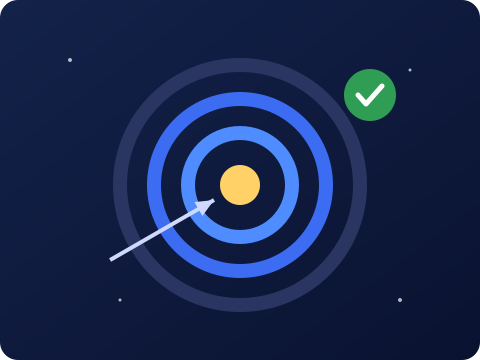
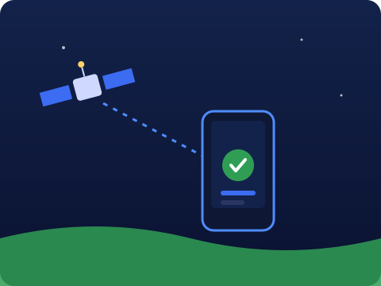

Desmatamento, mudanças climáticas e desastres naturais afetam milhões de pessoas todos os anos.
Monitorar o planeta em larga escala e em tempo real ainda é um grande desafio.

Combinamos satélites, sensores remotos e imagens orbitais para enxergar a Terra de cima.
Inteligência artificial e big data transformam esses dados em decisões rápidas.
Coletam imagens e dados precisos da superfície da Terra.
Captam informações sobre clima, solo e oceanos a distância.
Analisa grandes volumes de dados e gera previsões confiáveis.
Processa informações em escala global em poucos segundos.

Transformar dados espaciais em soluções acessíveis para problemas ambientais, sociais e econômicos.
Democratizar o acesso à informação gerada no espaço e apoiar decisões sustentáveis.
Nossa solução impacta quem precisa de dados confiáveis para decidir melhor.
De agricultores e governos a pesquisadores e comunidades isoladas pelo mundo.
Aumentam a produtividade com dados sobre plantio e clima.
Planejam políticas públicas e respondem rápido a desastres.
Estudam o clima, os oceanos e o meio ambiente.
Recebem internet e serviços essenciais via satélite.
A tecnologia espacial gera ganhos reais para o planeta e para as pessoas.
Mais sustentabilidade, produtividade, conectividade e inovação em um só lugar.
Monitoramento de desmatamento, emissões de carbono e prevenção de desastres com dados de satélite.
Imagens de satélite para aumentar a produtividade e procurar recursos naturais de forma sustentável.
Internet via satélite para regiões remotas e rastreamento em tempo real.
Inteligência artificial, sistemas autônomos e robótica explorando novas oportunidades.
O agricultor recebe no celular alertas sobre a sua plantação e evita perdas.
Cidades preveem enchentes e comunidades isoladas acessam a internet por satélite.

Responda as 10 perguntas abaixo e veja quantas você acertou.